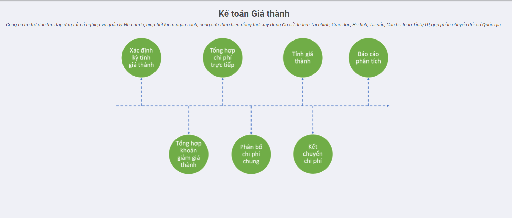
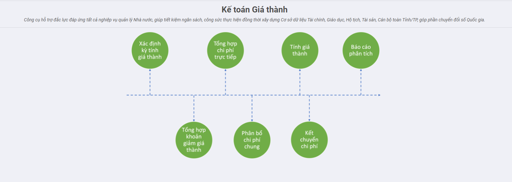

Quy trình nghiệp vụ
[Mô tả thông tin chung theo của toàn bộ Module Giá thành]
Module Giá thành hỗ trợ trong việc quản lý và tự động tập hợp chi phí sản xuất trực tiếp theo từng đối tượng tập hợp chi phí (sản phẩm/dịch vụ, phân xưởng, đơn hàng, công trình, hợp đồng); Phân bổ chi phí chung, xác định chi phí dở dang cuối kỳ và lên giá thành chi tiết theo từng sản phẩm/dịch vụ, đơn hàng, công trình, hợp đồng.
Phân hệ Giá thành hỗ trợ doanh nghiệp tính giá thành sản phẩm theo các phương pháp sau:
- Giá thành theo phương pháp giản đơn
- Giá thành theo phương pháp hệ số, tỷ lệ
- Giá thành công trình/vụ việc
- Giá thành đơn hàng
- Giá thành hợp đồng
Quy trình
Tính giá thành theo PP Hệ số tỷ lệ
Quy trình nghiệp vụ
Giá thành theo phương pháp hệ số, tỷ lệ: Áp dụng cho các doanh nghiệp có quy trình sản xuất sử dụng cùng loại nguyên vật liệu chính và tạo ra nhiều sản phẩm/nhóm sản phẩm khác nhau. Trong đó, đối tượng tập hợp chi phí là toàn bộ quy trình công nghệ và đối tượng tính giá thành là từng sản phẩm/nhóm sản phẩm hoàn thành. Ví dụ: doanh nghiệp sản xuất các mặt hàng như sản xuất đá các loại, gạch các loại,…
Quy trình nghiệp vụ

Các luồng quy trình
[Liệt kê các luồng quy trình nghiệp vụ có trong Module, có link đến Phần Hướng dẫn chi tiết]
· Tính giá thành theo TT133. Chi tiết nghiệp vụ tại đây
· Tính giá thành theo TT200. Chi tiết nghiệp vụ tại đây
Thiết lập định mức PBCP theo đối tượng THCP
Mô tả nghiệp vụ
· Cho phép nhân viên kế toán giá thành Khai báo định mức phân bổ chi phí theo Đối tượng THCP
Các bước thực hiện
Áp dụng TT 133
Bước 1: Vào phân hệ Kế toán Giá thành, Chọn chức năng Khai báo định mức phân bổ chi phí. Chọn Tạo mới.Màn hình hiển thị thông tin sau:

Bước 2: Chọn đối tượng THCP, Đơn vị, sau đó chọn Khoản mục phí và nhập Tổng tiền cho các khoản mục phí khai báo
Bước 3: Bấm Lưu. Sau khi bấm Lưu, Bản ghi chuyển trạng thái Dự thảo. Để chuyển bản ghi sang trạng thái Đã hoàn thành --> Bấm Xác Nhận
Áp dụng TT 200
Bước 1: Vào phân hệ Kế toán Giá thành, Chọn chức năng Khai báo định mức phân bổ chi phí. Màn hình hiển thị thông tin sau:

Bước 2: Chọn đối tượng THCP, Đơn vị, sau đó chọn Tài khoản và nhập Tổng tiền cho các khoản mục phí khai báo
Bước 3: Bấm Lưu. Sau khi bấm Lưu, Bản ghi chuyển trạng thái Dự thảo. Để chuyển bản ghi sang trạng thái Đã hoàn thành --> Bấm Xác Nhận
Lưu ý: Bản ghi chỉ cho phép Xóa ở trạng thái Dự thảo. Và bản ghi chỉ sử dụng ở các chức năng khác với trạng thái bản ghi Đã hoàn thành
Thiết lập định mức giá thành
Mô tả nghiệp vụ
· Cho phép nhân viên kế toán giá thành Khai báo định mức giá thành
Các bước thực hiện
Bước 1: Vào Phân hệ Kế toán giá thành, Chọn menu Khai báo định mức giá thành. Chọn Tạo mới. Màn hình hiển thị thông tin như sau:

Bước 2: Chọn Đơn vị. Chọn Thành phẩm và nhập định mức theo các khoản mục Nguyên vật liệu trực tiếp, nhân công trực tiếp...
Bước 3: Bấm Lưu. Sau khi bấm Lưu, Bản ghi chuyển trạng thái Dự thảo. Để chuyển bản ghi sang trạng thái Đã hoàn thành --> Bấm Xác Nhận
Nếu người dùng muốn nhập chi tiết các chi phí khác như Chi phí Nguyên vật liệu gián tiếp, Nhân công gián tiếp, Chi phí mua ngoài...--> Tích chọn vào Nhập chi tiết theo yếu tố chi phí. Màn hình hiển thị thông tin như sau:

Tiếp theo, người dùng thực hiện khai báo từ Bước 2
Lưu ý: Bản ghi chỉ cho phép Xóa ở trạng thái Dự thảo. Và bản ghi chỉ sử dụng ở các chức năng khác với trạng thái bản ghi Đã hoàn thành
Thiết lập chi phí dở dang đầu kỳ
Mô tả nghiệp vụ
· Cho phép nhân viên kế toán giá thành Khai báo chi phí dở dang đầu kỳ
Các bước thực hiện
Bước 1: Vào Phân hệ Kế toán giá thành, Chọn menu Khai báo chi phí dở dang đầu kỳ. Chọn Tạo mới. Màn hình hiển thị thông tin như sau:

Bước 2: Chọn Đơn vị, Sau đó chọn Thêm một dòng và nhập dữ liệu vào các trường dữ liệu như hình dưới đây:

Bước 3: Bấm Lưu. Sau khi bấm Lưu, Bản ghi chuyển trạng thái Dự thảo. Để chuyển bản ghi sang trạng thái Đã hoàn thành --> Bấm Xác Nhận
Nếu người dùng muốn nhập chi tiết các chi phí khác như Chi phí Nguyên vật liệu gián tiếp, Nhân công gián tiếp, Chi phí mua ngoài...--> Tích chọn vào Nhập chi tiết theo yếu tố chi phí. Màn hình hiển thị thông tin như sau:

Tiếp theo, người dùng thực hiện khai báo từ Bước 2
Lưu ý: Bản ghi chỉ cho phép Xóa ở trạng thái Dự thảo. Và bản ghi chỉ sử dụng ở các chức năng khác với trạng thái bản ghi Đã hoàn thành
Tính giá thành theo TT133
Mô tả nghiệp vụ
Cho phép nhân viên kế toán tính giá thành theo từng khoản mục phí
Thực hiện tính chi phí dở dang đầu kỳ,phát sinh trong kỳ, dở dang cuối kỳ để tính giá thành
Cập nhật giá thành vào Phiếu nhập kho và Phiếu xuất kho
Hướng dẫn trên phần mềm
Bước 1: Khai báo nguyên vật liệu sản xuất và thành phẩm
Vào Kế toán Giá thành, chọn Nhóm Danh mục, Chọn chức năng Sản Phẩm. Màn hình khai báo hiển thị thông tin như sau:

Sau đó, Nhập Tên sản phẩm. Chọn Tuyến cung ứng Sản xuất. Bấm Lưu
Bước 2: Khai báo đối tượng tập hợp chi phí
Vào Kế toán Giá thành, chọn Nhóm Danh mục, Chọn chức năng Đối tượng THCP. Màn hình khai báo hiển thị thông tin như sau:

Thực hiện nhập dữ liệu:
- Chọn Loại: Sản phẩm
- Phương pháp tính giá thành: Chọn Hệ số hoặc Tỷ lệ
- Đánh giá sản phẩm DD CK: chọn Nguyên Vật liệu trực tiếp( hoặc sản lượng hoàn thành tương đương, định mức)
- Chọn Thêm một dòng và Chọn sản phẩm vào đối tượng THCP
Bấm Lưu bản ghi
Bước 3: Xuất kho nguyên vật liệu sản xuất
Bước 3.1. Vào Phân hệ Kế toán kho. Chọn Nhóm Danh mục. Chọn chức năng Kiểu hoạt động.Bấm Tạo mới. Màn hình hiển thị thông tin như sau:

Bước 3.2: Chọn Loại hoạt động là Phiếu xuất kho và Movement type là Xuất sản xuất.
Bước 3.3. Bấm Lưu. Sau đó vào Nhóm Nghiệp vụ kho. Chọn Phiếu xuất kho. Màn hình hiển thị thông tin như sau:

Bước 3.4: Thực hiện nhập dữ liệu phiếu xuất kho:
Loại xuất: Chọn Loại xuất vừa tạo ở kiểu hoạt động
Chọn Sản phẩm của đối tượng THCP tính giá thành
Nhập Nhu cầu
Bước 3.5: Bấm Lưu. Sau đó bấm Đánh dấu cần làm để chuyển trạng thái bản ghi sang Sẵn sàng. Chọn Xác nhận để chuyển trạng thái Hoàn thành
Bước 4: Hạch toán các chi phí phát sinh
Thực hiện hạch toán các chi phí phát sinh liên quan đến việc tính giá thành (Nợ TK 621, 622, 623, 627, 154) có thể được hạch toán trên phân hệ khác với các đối tượng THCP đang tính giá thành
Bước 5: Nhập kho thành phẩm sản xuất
Bước 5.1: Vào Phân hệ Kế toán kho. Chọn Nhóm Danh mục. Chọn chức năng Kiểu hoạt động.Bấm Tạo mới. Màn hình hiển thị thông tin như sau:

Chọn Loại hoạt động là Phiếu nhập kho và Movement type là Nhập thành phẩm sản xuất.
Bước 5.2: Vào phân hệ Kế toán Kho. Nhóm Nghiệp vụ kho. Chọn Phiếu nhập kho.Màn hình hiển thị thông tin sau:

Bước 5.3: Thực hiện nhập dữ liệu phiếu nhập kho:
Loại xuất: Chọn Loại nhập vừa tạo ở kiểu hoạt động
Chọn Sản phẩm của đối tượng THCP tính giá thành
Bước 5.4: bấm Lưu. Sau đó bấm Đánh dấu cần làm để bản ghi chuyển trạng thái Sẵn sàng. Thực hiện Sửa bản ghi. thêm số lượng hoàn thành vào thành phẩm trong tab Vật tư,hàng hóa
Bước 5.5. Bấm Xác nhận để chuyển trạng thái bản ghi sang Hoàn thành
Bước 6: Xác định kỳ tính giá thành
Bước 6.1: Vào Phân hệ Kế toán giá thành. Chọn nhóm Sản xuất liên tục-Hệ số,tỷ lệ. Chọn Kỳ tính giá thành. Bấm Tạo mới. Màn hình hiển thị thông tin như sau:

Bước 6.2: Chọn Đơn vị, Kỳ tính giá thành. Chọn Thêm một dòng và chọn Đối tượng THCP như hình sau:

Bước 6.3:Bấm Lưu để chuyển trạng thái bản ghi Dự thảo
Bước 6.4: Bấm Xác nhận để lưu trạng thái Đang thực hiện
Lưu ý: Bản ghi chỉ được phép Sửa,Xóa khi ở trạng thái Dự thảo. Và chỉ được sử dụng khi ở trạng thái Đang thực hiện. Không cho phép chuyển bản ghi về trạng thái dự thảo khi bản ghi đang được sử dụng tính toán ở các chức năng khác.
Bước 7: Tính giá thành phẩm
- Tính Phân bổ chi phí chung
Bước 7.1: Vào Phân hệ Kế toán giá thành. Nhóm Sản xuất liên tục - Hệ số,tỷ lệ. Chọn chức năng Phân bổ chi phí chung. Bấm Tạo mới. Màn hình hiển thị thông tin như sau:

Bước 7.2: Chọn Kỳ tính giá thành. Bấm Lấy dữ liệu để thực hiện lấy chi phí chung trong kỳ. Dữ liệu view ở tab Chi phí. Lấy toàn bộ các chi phí theo khoản mục phí
Bước 7.3: Nhập tỷ lệ phân bổ và chọn tiêu thức phân bổ
Bước 7.4: Bấm Tính toán Phân bổ. Hệ thống sẽ tự động tính toán phân bổ theo từng đối tượng THCP trong kỳ tính giá thành

Bước 7.5: Bấm Xác nhận
Lưu ý:
Để phân bổ được chi phí chung theo Định mức, cần khai báo định mức phân bổ chi phí trên menu Kế toán Giá thành\Sản xuất liên tục – Hệ số,tỷ lệ\Khai báo định mức phân bổ chi phí theo đối tượng THCP.
Sau khi tính giá thành xong, có thể kiểm tra thông tin chi phí chung được phân bổ trên tab Bảng phân bổ chi phí chung của màn hình danh sách kỳ tính giá thành
- Đánh giá dở dang
Bước 7.6: Vào Phân hệ Kế toán giá thành. Chọn chức năng Tính chi phí dở dang cuối kỳ và tính giá thành. Bấm Tạo mới. Màn hình hiển thị thông tin như sau:

Bước 7.7: Chọn Kỳ tính giá thành,Nhập nội dung. Bấm Lấy dữ liệu. Hệ thống tự động xác định thành phẩm trong kỳ tính giá thành đã chọn. Tiếp theo, nhập số lượng dở dang cuối kỳ, tỷ lệ % hoàn thành.
Bước 7.8. Bấm Tính chi phí dở dang. Hệ thống tự động tính chi phí dở dang cuối kỳ. Hiển thị thông tin như hình dưới đây:

Với các đối tượng THCP chọn phương pháp tính giá thành: hệ số/tỷ lệ. Khi thực hiện bấm Lấy dữ liệu. Hệ thống tự động tính toán tỷ lệ giá thành.
- Tính giá thành
Bước 7.9: Bấm Tính giá thành. Hệ thống thực hiện tính giá thành theo từng khoản mục của đối tượng THCP
Với các đối tượng THCP có phiếu nhập kho và Phiếu xuất kho trong kỳ tính giá thành. Hệ thống thực hiện cập nhật giá nhập kho vào phiếu nhập kho của thành phẩm.
Với đối tượng có phiếu xuất kho, khi thực hiện tính giá thành. Hệ thống hiển thị màn hình tính giá xuất kho như hình:

THực hiện chọn thời gian và chọn tính giá không theo kho. Bấm Lưu. Hệ thống tự động tính giá và cập nhật vào phiếu xuất kho.
Lưu ý:
-
Sau khi tính giá thành xong, có thể kiểm tra lại giá thành của từng thành phẩm trên tab Bảng tính giá thành của màn hình danh sách kỳ tính giá thành.
-
Trường hợp muốn kiểm tra lại các khoản chi phí trực tiếp, phục vụ cho việc tính giá thành hoặc các khoản chi phí làm giảm giá thành của thành phẩm, kế toán nhấn chuột phải tại màn hình danh sách kỳ tính giá thành và chọn chức năng Tập hợp chi phí trực tiếp* hoặc Tập hợp khoản giảm giá thành
Tính giá thành theo TT200
Mô tả nghiệp vụ
Cho phép nhân viên kế toán tính giá thành theo từng khoản mục phí
Thực hiện tính chi phí dở dang đầu kỳ,phát sinh trong kỳ, dở dang cuối kỳ để tính giá thành
Cập nhật giá thành vào Phiếu nhập kho và Phiếu xuất kho
Hướng dẫn trên phần mềm
-
Bước 1: Khai báo nguyên vật liệu sản xuất và thành phẩm
Vào Kế toán Giá thành, chọn Nhóm Danh mục, Chọn chức năng Sản Phẩm. Màn hình khai báo hiển thị thông tin như sau:
Sau đó, Nhập Tên sản phẩm. Chọn Tuyến cung ứng Sản xuất. Bấm Lưu
#### Bước 2: Khai báo đối tượng tập hợp chi phí
Vào Kế toán Giá thành, chọn Nhóm Danh mục, Chọn chức năng Đối tượng THCP. Màn hình khai báo hiển thị thông tin như sau:
Thực hiện nhập dữ liệu:
- Chọn Loại: Sản phẩm
- Phương pháp tính giá thành: Chọn Hệ số hoặc Tỷ lệ
- Đánh giá sản phẩm DD CK: chọn Nguyên Vật liệu trực tiếp( hoặc sản lượng hoàn thành tương đương, định mức)
- Chọn Thêm một dòng và Chọn sản phẩm vào đối tượng THCP
Bấm Lưu bản ghi
#### Bước 3: Xuất kho nguyên vật liệu sản xuất
Bước 3.1. Vào Phân hệ Kế toán kho. Chọn Nhóm Danh mục. Chọn chức năng Kiểu hoạt động.Bấm Tạo mới. Màn hình hiển thị thông tin như sau:
Bước 3.2: Chọn Loại hoạt động là Phiếu xuất kho và Movement type là Xuất sản xuất.
Bước 3.3. Bấm Lưu. Sau đó vào Nhóm Nghiệp vụ kho. Chọn Phiếu xuất kho. Màn hình hiển thị thông tin như sau:
Bước 3.4: Thực hiện nhập dữ liệu phiếu xuất kho:
Loại xuất: Chọn Loại xuất vừa tạo ở kiểu hoạt động
Chọn Sản phẩm của đối tượng THCP tính giá thành
Nhập Nhu cầu
Bước 3.5: Bấm Lưu. Sau đó bấm Đánh dấu cần làm để chuyển trạng thái bản ghi sang Sẵn sàng. Chọn Xác nhận để chuyển trạng thái Hoàn thành
#### Bước 4: Hạch toán các chi phí phát sinh
Thực hiện hạch toán các chi phí phát sinh liên quan đến việc tính giá thành (Nợ TK 621, 622, 623, 627, 154) có thể được hạch toán trên phân hệ khác với các đối tượng THCP đang tính giá thành
#### Bước 5: Nhập kho thành phẩm sản xuất
Bước 5.1: Vào Phân hệ Kế toán kho. Chọn Nhóm Danh mục. Chọn chức năng Kiểu hoạt động.Bấm Tạo mới. Màn hình hiển thị thông tin như sau:
Chọn Loại hoạt động là Phiếu nhập kho và Movement type là Nhập thành phẩm sản xuất.
Bước 5.2: Vào phân hệ Kế toán Kho. Nhóm Nghiệp vụ kho. Chọn Phiếu nhập kho.Màn hình hiển thị thông tin sau:
Bước 5.3: Thực hiện nhập dữ liệu phiếu nhập kho:
Loại xuất: Chọn Loại nhập vừa tạo ở kiểu hoạt động
Chọn Sản phẩm của đối tượng THCP tính giá thành
Bước 5.4: bấm Lưu. Sau đó bấm Đánh dấu cần làm để bản ghi chuyển trạng thái Sẵn sàng. Thực hiện Sửa bản ghi. thêm số lượng hoàn thành vào thành phẩm trong tab Vật tư,hàng hóa
Bước 5.5. Bấm Xác nhận để chuyển trạng thái bản ghi sang Hoàn thành
#### Bước 6: Xác định kỳ tính giá thành
Bước 6.1: Vào Phân hệ Kế toán giá thành. Chọn nhóm Sản xuất liên tục-Hệ số,tỷ lệ. Chọn Kỳ tính giá thành. Bấm Tạo mới. Màn hình hiển thị thông tin như sau:
Bước 6.2: Chọn Đơn vị, Kỳ tính giá thành. Chọn Thêm một dòng và chọn Đối tượng THCP như hình sau:
Bước 6.3:Bấm Lưu để chuyển trạng thái bản ghi Dự thảo
Bước 6.4: Bấm Xác nhận để lưu trạng thái Đang thực hiện
Lưu ý: Bản ghi chỉ được phép Sửa,Xóa khi ở trạng thái Dự thảo. Và chỉ được sử dụng khi ở trạng thái Đang thực hiện. Không cho phép chuyển bản ghi về trạng thái dự thảo khi bản ghi đang được sử dụng tính toán ở các chức năng khác.
#### Bước 7: Tính giá thành phẩm
- Tính Phân bổ chi phí chung
Bước 7.1: Vào Phân hệ Kế toán giá thành. Nhóm Sản xuất liên tục - Hệ số,tỷ lệ. Chọn chức năng Phân bổ chi phí chung. Bấm Tạo mới. Màn hình hiển thị thông tin như sau:

Bước 7.2: Chọn Kỳ tính giá thành. Bấm Lấy dữ liệu để thực hiện lấy chi phí chung trong kỳ. Dữ liệu view ở tab Chi phí. Lấy toàn bộ các chi phí theo đầu tài khoản(TK 621,TK 622...)
Bước 7.3: Nhập tỷ lệ phân bổ và chọn tiêu thức phân bổ
Bước 7.4: Bấm Tính toán Phân bổ. Hệ thống sẽ tự động tính toán phân bổ theo từng đối tượng THCP trong kỳ tính giá thành

Bước 7.5: Bấm Xác nhận
Lưu ý:
Để phân bổ được chi phí chung theo Định mức, cần khai báo định mức phân bổ chi phí trên menu Kế toán Giá thành\Sản xuất liên tục – Hệ số,tỷ lệ\Khai báo định mức phân bổ chi phí theo đối tượng THCP.
Sau khi tính giá thành xong, có thể kiểm tra thông tin chi phí chung được phân bổ trên tab Bảng phân bổ chi phí chung của màn hình danh sách kỳ tính giá thành
- Đánh giá dở dang
Bước 7.6: Vào Phân hệ Kế toán giá thành. Chọn chức năng Tính chi phí dở dang cuối kỳ và tính giá thành. Bấm Tạo mới. Màn hình hiển thị thông tin như sau:
Bước 7.7: Chọn Kỳ tính giá thành,Nhập nội dung. Bấm Lấy dữ liệu. Hệ thống tự động xác định thành phẩm trong kỳ tính giá thành đã chọn. Tiếp theo, nhập số lượng dở dang cuối kỳ, tỷ lệ % hoàn thành.
Bước 7.8. Bấm Tính chi phí dở dang. Hệ thống tự động tính chi phí dở dang cuối kỳ. Hiển thị thông tin như hình dưới đây:
Với các đối tượng THCP chọn phương pháp tính giá thành: hệ số/tỷ lệ. Khi thực hiện bấm Lấy dữ liệu. Hệ thống tự động tính toán tỷ lệ giá thành.
- Tính giá thành
Bước 7.9: Bấm Tính giá thành. Hệ thống thực hiện tính giá thành theo từng khoản mục của đối tượng THCP
Với các đối tượng THCP có phiếu nhập kho và Phiếu xuất kho trong kỳ tính giá thành. Hệ thống thực hiện cập nhật giá nhập kho vào phiếu nhập kho của thành phẩm.
Với đối tượng có phiếu xuất kho, khi thực hiện tính giá thành. Hệ thống hiển thị màn hình tính giá xuất kho như hình:
THực hiện chọn thời gian và chọn tính giá không theo kho. Bấm Lưu. Hệ thống tự động tính giá và cập nhật vào phiếu xuất kho.
Lưu ý:
-
Sau khi tính giá thành xong, có thể kiểm tra lại giá thành của từng thành phẩm trên tab Bảng tính giá thành của màn hình danh sách kỳ tính giá thành.
-
Trường hợp muốn kiểm tra lại các khoản chi phí trực tiếp, phục vụ cho việc tính giá thành hoặc các khoản chi phí làm giảm giá thành của thành phẩm, kế toán nhấn chuột phải tại màn hình danh sách kỳ tính giá thành và chọn chức năng Tập hợp chi phí trực tiếp* hoặc Tập hợp khoản giảm giá thành
Bước 8: Kết chuyển chi phí
Bước 8.1: Vào phân hệ Kế toán giá thành. Chọn nhóm Sản xuất liên tục- Hệ số,tỷ lệ. Chọn chức năng Kết chuyển chi phí. Bấm Tạo mới. Màn hình hiển thị các thông tin sau:

Bước 8.2: Chọn Đơn vị,Sổ nhật ký và bút toán kết chuyển
Bước 8.3: Bấm Tính kết chuyển. Hệ thống tự động thực hiện kết chuyển chi phí phát sinh theo đối tượng, chi phí phân bổ theo đối tượng sang tài khoản đích của bút toán kết chuyển trong kỳ tính giá thành
Bước 8.4: Bấm Xác nhận để hạch toán bản ghi
Tính giá thành Đơn hàng
Quy trình nghiệp vụ
Giá thành Đơn hàng: Áp dụng đối với các doanh nghiệp sản xuất theo đơn đặt hàng của khách hàng như: giày da, may mặc, phim ảnh, băng đĩa nhạc… và đối tượng tập hợp chi phí sẽ là các các đơn hàng.
Quy trình nghiệp vụ
Các luồng quy trình
· Tính giá thành theo TT133. Chi tiết nghiệp vụ tại đây
· Tính giá thành theo TT200. Chi tiết nghiệp vụ tại đây
Thiết lập chi phí dở dang đầu kỳ
Mô tả nghiệp vụ
Cho phép nhập chi phí dở dang đầu kỳ cho từng đơn hàng
Các bước thực hiện
Bước 1: Vào phân hệ Kế toán Giá Thành. Chọn Nhóm Đơn Hàng. Chọn chức năng Chi phí dở dang đầu kỳ. Màn hình hiển thị thông tin như sau:

Bước 2: Chọn Đơn vị. Chọn Đơn hàng khai báo chi phí dở dang đầu kỳ. Nhập dữ liệu vào các khoản mục chi phí. Tích chọn Nhập chi tiết theo yếu tố chi phí để nhập chi tiết chi phí như chi phí Nhân công gián tiếp, Nguyên vật liệu gián tiếp,Chi phí dịch vụ mua ngoài...
Bước 3: Bấm Lưu để lưu bản ghi trạng thái Dự thảo
Bước 4: Bấm Xác nhận để lưu bản ghi trạng thái Đang thực hiện
Tính giá thành theo TT133
Mô tả nghiệp vụ
Tính giá thành với các đơn hàng theo Công ty áp dụng thông tư 133
Hướng dẫn trên phần mềm
Bước 1: Khai báo đơn đặt hàng được sử dụng để THCP khi tính giá thành
Bước 1.1: Vào phân hệ Kế toán giá thành. Chọn Nhóm Đơn hàng. Chọn Đơn bán hàng. Bấm Tạo mới. Màn hình hiển thị thông tin như sau:

Bước 1.2: Chọn Khách hàng. Chọn sản phẩm cho đơn hàng.
Bước 1.3: Bấm Lưu
Bước 2: Hạch toán các chi phí phát sinh
Thực hiện hạch toán các chi phí phát sinh liên quan đến việc tính giá thành (Nợ TK 621, 622, 623, 627, 154) có thể được hạch toán trên phân hệ khác với các đơn hàng đang tính giá thành
Bước 3: Xác định kỳ tính giá thành
Vào phân hệ Kỳ tính giá thành. Chọn Nhóm Đơn hàng. Chọn Kỳ tính giá thành. Bấm Tạo mới. Màn hình hiển thị thông tin như sau:

Bước 5.1: Chọn Đơn vị. Chọn Kỳ tính giá thành. Chọn Đơn hàng.Sau Lưu hệ thống tự động lấy dữ liệu Lũy kế kỳ trước, phát sinh trong kỳ, khoản giảm giá thành,...
Bước 5.2. Bấm Lưu để lưu bản ghi ở trạng thái Dự thảo Bước 5.3: Bấm Xác nhận để lưu bản ghi ở trạng thái Đang thực hiện
Lưu ý:Bản ghi chỉ cho phép sửa xóa ở trạng thái Dự thảo và chỉ cho phép chuyển trạng thái Đang thực hiện về dự thảo khi kỳ tính giá thành không được sử dụng ở các chức năng khác.
Bước 4: Phân bổ chi phí chung
Vào phân hệ Kỳ tính giá Thành. Chọn Nhóm Đơn hàng. Chọn Phân bổ chi phí chung. Màn hình hiển thị thông tin như sau:

Bước 4.1: Bấm Lấy dữ liệu. Hệ thống tự động lấy các chi phí phát sinh chung trong kỳ theo các khoản mục phí. Nhập tỷ lệ phân bổ và tiêu thức phân bổ.
Bước 4.2: Bấm Tính toán phân bổ. Hệ thống tự động tính toán phân bổ theo tiêu thức phân bổ cho từng đơn hàng. Chi tiết như hình ảnh dưới đây:

Bước 4.3: Bấm Lưu để lưu bản ghi ở trạng thái Dự thảo
Bước 4.4: bấm Xác nhận để lưu bản ghi ở trạng thái Đang thực hiện
Bước 5: Nghiệm thu đơn hàng
Vào Phân hệ Kế toán Giá thành. Chọn Nhóm Đơn hàng. Chọn Nghiệm thu đơn hàng. Chọn Tạo mới. Màn hình hiển thị thông tin như dưới đây:

Bước 5.1: Chọn Đơn vị, Sổ nhật ký, Kỳ tính giá thành, Nội dung.Chọn Đơn hàng thực hiện nghiệm thu. Hệ thống tự động lấy ra giá trị doanh thu, số chưa nghiệm thu. Nhập tỷ lệ nghiệm thu và bấm Bút toán hoặc Xác nhận để thực hiện nghiệm thu đơn hàng

Bước 5.2: Bấm Lưu để thực hiện nghiệm thu với bút toán nghiệm thu ở trạng thái Dự thảo Bước 5.3: Bấm Xác nhận để thực hiện nghiệm thu với bút toán nghiệm thu ở trạng thái Đang thực hiện
Lưu ý: Sau khi nghiệm thu. Hệ thống tự động cập nhật lại số đã nghiệm thu ở Kỳ tính giá thành. Để xem chi tiết số đã nghiệm thu ở màn hình Kỳ tính giá thành
Tính giá thành theo TT200
Mô tả nghiệp vụ
Tính giá thành đơn hàng áp dụng với các công ty theo thông tư 200
Hướng dẫn trên phần mềm
Bước 1: Khai báo đơn đặt hàng được sử dụng để THCP khi tính giá thành
Bước 1.1: Vào phân hệ Kế toán giá thành. Chọn Nhóm Đơn hàng. Chọn Đơn bán hàng. Bấm Tạo mới. Màn hình hiển thị thông tin như sau:
Bước 1.2: Chọn Khách hàng. Chọn sản phẩm cho đơn hàng.
Bước 1.3: Bấm Lưu
Bước 2: Hạch toán các chi phí phát sinh
Thực hiện hạch toán các chi phí phát sinh liên quan đến việc tính giá thành (Nợ TK 621, 622, 623, 627, 154) có thể được hạch toán trên phân hệ khác với các đơn hàng đang tính giá thành
Bước 3: Xác định kỳ tính giá thành
Vào phân hệ Kỳ tính giá thành. Chọn Nhóm Đơn hàng. Chọn Kỳ tính giá thành. Bấm Tạo mới. Màn hình hiển thị thông tin như sau:
Bước 5.1: Chọn Đơn vị. Chọn Kỳ tính giá thành. Chọn Đơn hàng.Sau Lưu hệ thống tự động lấy dữ liệu Lũy kế kỳ trước, phát sinh trong kỳ, khoản giảm giá thành,...
Bước 5.2. Bấm Lưu để lưu bản ghi ở trạng thái Dự thảo Bước 5.3: Bấm Xác nhận để lưu bản ghi ở trạng thái Đang thực hiện
Lưu ý:Bản ghi chỉ cho phép sửa xóa ở trạng thái Dự thảo và chỉ cho phép chuyển trạng thái Đang thực hiện về dự thảo khi kỳ tính giá thành không được sử dụng ở các chức năng khác.
Bước 4: Phân bổ chi phí chung
Vào phân hệ Kỳ tính giá Thành. Chọn Nhóm Đơn hàng. Chọn Phân bổ chi phí chung. Màn hình hiển thị thông tin như sau:

Bước 4.1: Bấm Lấy dữ liệu. Hệ thống tự động lấy các chi phí phát sinh chung trong kỳ theo các tài khoản.Nhập tỷ lệ phân bổ và tiêu thức phân bổ.
Bước 4.2: Bấm Tính toán phân bổ. Hệ thống tự động tính toán phân bổ theo tiêu thức phân bổ cho từng đơn hàng. Chi tiết như hình ảnh dưới đây:

Bước 4.3: Bấm Lưu để lưu bản ghi ở trạng thái Dự thảo
Bước 4.4: bấm Xác nhận để lưu bản ghi ở trạng thái Đang thực hiện
Bước 4: Kết chuyển chi phí
Bước 4.1: Vào phân hệ Kế toán giá thành. Chọn nhóm Đơn hàng. Chọn chức năng Kết chuyển chi phí. Bấm Tạo mới. Màn hình hiển thị các thông tin sau:

Bước 8.2: Chọn Đơn vị,Sổ nhật ký và bút toán kết chuyển
Bước 8.3: Bấm Tính kết chuyển. Hệ thống tự động thực hiện kết chuyển chi phí phát sinh theo đối tượng, chi phí phân bổ theo đối tượng sang tài khoản đích của bút toán kết chuyển trong kỳ tính giá thành
Bước 8.4: Bấm Xác nhận để hạch toán bản ghi.
Bước 5: Nghiệm thu đơn hàng
Vào Phân hệ Kế toán Giá thành. Chọn Nhóm Đơn hàng. Chọn Nghiệm thu đơn hàng. Chọn Tạo mới. Màn hình hiển thị thông tin như dưới đây:
Bước 5.1: Chọn Đơn vị, Sổ nhật ký, Kỳ tính giá thành, Nội dung.Chọn Đơn hàng thực hiện nghiệm thu. Hệ thống tự động lấy ra giá trị doanh thu, số chưa nghiệm thu. Nhập tỷ lệ nghiệm thu và bấm Bút toán hoặc Xác nhận để thực hiện nghiệm thu đơn hàng
Bước 5.2: Bấm Lưu để thực hiện nghiệm thu với bút toán nghiệm thu ở trạng thái Dự thảo Bước 5.3: Bấm Xác nhận để thực hiện nghiệm thu với bút toán nghiệm thu ở trạng thái Đang thực hiện
Lưu ý: Sau khi nghiệm thu. Hệ thống tự động cập nhật lại số đã nghiệm thu ở Kỳ tính giá thành. Để xem chi tiết số đã nghiệm thu ở màn hình Kỳ tính giá thành
Tính giá thành Hợp đồng
Quy trình nghiệp vụ
Giá thành Hợp đồng: Áp dụng đối với các doanh nghiệp sản xuất theo hợp đồng, với đối tượng tập hợp chi phí sẽ là các các hợp đồng cụ thể. Thông thường mục đích của việc tính giá thành theo hợp đồng là để xác định giá trị của thương vụ là bao nhiêu, không quan tâm đến đơn giá của từng hàng hoá trên sản phẩm.
Quy trình nghiệp vụ

Các luồng quy trình
· Tính giá thành theo TT133. Chi tiết nghiệp vụ tại đây
· Tính giá thành theo TT200. Chi tiết nghiệp vụ tại đây
Thiết lập chi phí dở dang đầu kỳ
Mô tả nghiệp vụ
· Cho phép nhập chi phí dở dang đầu kỳ cho từng hợp đồng
Các bước thực hiện
Bước 1: Khai báo hợp đồng được sử dụng để THCP khi tính giá thành
-
Vào phân hệ Kế toán giá thành\Hợp đồng\Hợp đồng bán chọn Tạo (Hoặc thực hiện Tìm kiếm trực tiếp chức năng trên ô tìm kiếm chung của hệ thống)
-
Khai báo thông tin về Hợp đồng
-
Tích chọn Tính giá thành để cho phép chương trình tập hợp được chi phí theo hợp đồng bán khi tính giá thành.

-
Khai báo các mặt hàng được sản xuất theo Hợp đồng
Lưu ý: Sau khi khai báo các hàng hoá được bán theo hợp đồng trên tab Danh sách hàng hoá, hệ thống sẽ tự động cập nhập lại thông tin Giá trị hợp đồng bên tab Thông tin chung.

- Sau khi khai báo xong bấm Xác nhận
Bước 2: Vào phân hệ Kế toán giá thành\Hợp đồng\Chi phí dở dang đầu kỳ chọn Tạo (Hoặc thực hiện Tìm kiếm trực tiếp chức năng trên ô tìm kiếm chung của hệ thống)

Bước 3: Khai báo thông tin chi tiết:
- Chọn thông tin đơn vị
- Chọn hợp đồng cần nhập
- Nhập chi phí dở dang của từng hợp đồng bán
- Trường hợp muốn nhập chi phí dở dang của hợp đồng bán chi tiết theo từng yếu tố chi phí, tích chọn vào checkbox Nhập chi tiết theo yếu tố chi phí
Bước 4: Nhấn Xác nhận
Tính giá thành theo TT133
Mô tả nghiệp vụ
Áp dụng đối với các doanh nghiệp sản xuất theo hợp đồng, với đối tượng tập hợp chi phí sẽ là các hợp đồng cụ thể. Thông thường mục đích của việc tính giá thành theo hợp đồng là để xác định giá trị của thương vụ là bao nhiêu, không quan tâm đến đơn giá của từng hàng hoá trên sản phẩm. Ví dụ: Có hợp đồng đặt 5 bức tranh hoa, 5 bức tranh chữ và 5 bức tranh chân dung, sau khi tính giá xong thì toàn bộ số tranh này sẽ được bàn giao thẳng cho khách hàng mà không nhập kho.
Hướng dẫn trên phần mềm
Đối với các doanh nghiệp áp dụng theo TT133, việc tính giá thành theo Hợp đồng được thực hiện qua các bước sau:
Bước 1: Hạch toán các chi phí phát sinh
Các chi phí phát sinh liên quan đến việc tính giá thành (Nợ 154) có thể được hoạch toán trên phân hệ Quỹ, Ngân hàng hoặc Tổng hợp

Lưu ý: Khi thực hiện tính giá thành theo TT133, bắt buộc phải chọn thông tin về Khoản mục CP. Riêng thông tin về Hợp đồng, sẽ chọn nếu xác định được là chi phí phát sinh cho hợp đồng nào và bỏ trống nếu chưa xác định được hợp đồng.
Bước 2: Xác định kỳ tính giá thành
- Vào phân hệ Kế toán giá thành\Hợp đồng\Kỳ tính giá thành chọn Tạo (Hoặc thực hiện Tìm kiếm trực tiếp chức năng trên ô tìm kiếm chung của hệ thống)
- Khai báo khoảng thời gian tính giá thành
- Chọn Hợp đồng để tính giá thành dưới tab Đối tượng tập hợp CP

- Bấm Xác nhận, chương trình sẽ tư động lấy lên những hợp đồng bán có phát sinh trong thời gian thuộc kỳ tính giá thành vào tổng hợp tại tab Tổng hợp chi phí.
Lưu ý:
· Một số hợp đồng bán không thể cùng tồn tại trên các kỳ tính giá thành có thời gian trùng nhau.
· Sử dụng chức năng Thêm một dòng/Xoá để chọn bổ sung hoặc xoá xác hợp đồng bán trên danh sách.
Bước 3: Phân bổ chi phí chung
- Vào phân hệ Kế toán giá thành\Hợp đồng\Phân bổ chi phí chung chọn Tạo (Hoặc thực hiện Tìm kiếm trực tiếp chức năng trên ô tìm kiếm chung của hệ thống).
- Chọn kỳ tính giá thành và nhấn Lấy dữ liệu, chương trình sẽ tổng hợp các chứng từ xuất kho NVL, hoạch toán chi phí lương, chi phí sản xuất chung có hoạch toán nợ TK154, chọn Khoản mục CP nhưng chưa chọn Hợp đồng để thực hiện việc phân bổ.
- Nhập tỷ lệ phân bổ và lựa chọn 1 trong 4 tiêu thức phân bổ: Nguyên vật liệu trực tiếp, Nhân công trực tiếp, Chi phí trực tiếp (NVLTT, NCTT) và Doanh thu.

- Nhấn Tính toán phân bổ, chương trình sẽ tự động phân bổ chi phí của từng khoản mục chi phí trên tab Chi phí cho Hợp đồng trên tab Phân bổ theo tiêu thức phân bổ đã chọn.

- Bấm Xác nhận để lưu các bút toán phân bổ chi phí cho từng Hợp đồng
Lưu ý:
· Nếu chọn lại chức năng Lấy dữ liệu, các thông tin thiết lập phục vụ cho việc phân bổ chi phí chung trước đó sẽ bị xoá và phải thực hiện lại việc khai báo.
· Sau khi tính phân bổ xong, có thể kiểm tra thông tin chung được phân bổ trên tab Phân bổ chi phí chung của màn hình kỳ tính giá thành.
Bước 4: Nghiệm thu hợp đồng
- Vào phân hệ Kế toán giá thành\Hợp đồng\Nghiệm thu hợp đồng chọn Tạo (Hoặc thực hiện Tìm kiếm trực tiếp chức năng trên ô tìm kiếm chung của hệ thống).
- Chọn Kỳ tính giá thành.
- Chọn Hợp đồng bán được nghiệm thu (Doanh thu sẽ được tự động lấy dữ liệu đã phát sinh trong kỳ theo từng hợp đồng bán).
- Nhập tỷ lệ nghiệm thu cho từng hợp đồng bán.

- Nhấn Bút toán, chương trình sẽ tự động tổng hợp chi phí từ tài khoản 154 để kết chuyển sang TK 632 cho từng hợp đồng tương ứng tại tab Bút toán

- Nhấn Xác nhận
Tính giá thành theo TT200
Mô tả nghiệp vụ
Áp dụng đối với các doanh nghiệp sản xuất theo hợp đồng, với đối tượng tập hợp chi phí sẽ là các hợp đồng cụ thể. Thông thường mục đích của việc tính giá thành theo hợp đồng là để xác định giá trị của thương vụ là bao nhiêu, không quan tâm đến đơn giá của từng hàng hoá trên sản phẩm. Ví dụ: Có hợp đồng đặt 5 bức tranh hoa, 5 bức tranh chữ và 5 bức tranh chân dung, sau khi tính giá xong thì toàn bộ số tranh này sẽ được bàn giao thẳng cho khách hàng mà không nhập kho.
Hướng dẫn trên phần mềm
Bước 1: Hạch toán các chi phí phát sinh
Các chi phí phát sinh liên quan đến việc tính giá thành (Nợ TK 621, 622, 627, 154) có thể hoạch toán trên phân hệ Quỹ, Ngân hàng hoặc Tổng hợp.

Lưu ý: Khi hoạch toán các chứng từ chi phí phát sinh nếu xác định được là chi phí phát sinh cho hợp đồng nào, thì chọn thông tin tại cột Hợp đồng bán hoặc bỏ trống nếu chưa xác định được hợp đồng nào.
Bước 2: Xác định kỳ tính giá thành
- Vào phân hệ Kế toán giá thành\Hợp đồng\Kỳ tính giá thành chọn Tạo (Hoặc thực hiện Tìm kiếm trực tiếp chức năng trên ô tìm kiếm chung của hệ thống)
- Khai báo khoảng thời gian tính giá thành
- Chọn Hợp đồng để tính giá thành dưới tab Đối tượng tập hợp CP

- Bấm Xác nhận, chương trình sẽ tư động lấy lên những hợp đồng bán có phát sinh trong thời gian thuộc kỳ tính giá thành vào tổng hợp tại tab Tổng hợp chi phí.
Lưu ý:
· Một số hợp đồng bán không thể cùng tồn tại trên các kỳ tính giá thành có thời gian trùng nhau.
· Sử dụng chức năng Thêm một dòng/Xoá để chọn bổ sung hoặc xoá xác hợp đồng bán trên danh sách.
Bước 3: Phân bổ chi phí chung
- Vào phân hệ Kế toán giá thành\Hợp đồng\Phân bổ chi phí chung chọn Tạo (Hoặc thực hiện Tìm kiếm trực tiếp chức năng trên ô tìm kiếm chung của hệ thống).
- Chọn kỳ tính giá thành và nhấn Lấy dữ liệu, chương trình sẽ tổng hợp các chứng từ xuất kho NVL (TK 621), hoạch toán chi phí lương (TK 622), chi phí sản xuất chung (627), chưa có thông tin Hợp đồng để thực hiện việc phân bổ
- Nhập tỷ lệ phân bổ và lựa chọn 1 trong 4 tiêu thức phân bổ: Nguyên vật liệu trực tiếp, Nhân công trực tiếp, Chi phí trực tiếp (NVLTT, NCTT) và Doanh thu.

- Nhấn Tính toán phân bổ, chương trình sẽ tự động phân bổ chi phí của từng khoản mục chi phí trên tab Chi phí cho Hợp đồng trên tab Phân bổ theo tiêu thức phân bổ đã chọn.

- Bấm Xác nhận để lưu các bút toán phân bổ chi phí cho từng Hợp đồng
Lưu ý:
· Nếu chọn lại chức năng Lấy dữ liệu, các thông tin thiết lập phục vụ cho việc phân bổ chi phí chung trước đó sẽ bị xoá và phải thực hiện lại việc khai báo.
· Sau khi tính phân bổ xong, có thể kiểm tra thông tin chung được phân bổ trên tab Phân bổ chi phí chung của màn hình kỳ tính giá thành.
Bước 4: Kết chuyển chi phí
- Vào phân hệ Kế toán giá thành\Hợp đồng\Kết chuyển chi phí chọn Tạo (Hoặc thực hiện Tìm kiếm trực tiếp chức năng trên ô tìm kiếm chung của hệ thống).
- Nhập đầy đủ thông tin: Đơn vị, Sổ nhật ký, Bút toán kết chuyển
- Chọn kỳ tính giá thành
- Nhấn Tính kết chuyển, chương trình sẽ tự động tổng hợp chi phí từ các tài khoản 621, 622, 627,... để kết chuyển sang TK 154.

- Nhấn Xác nhận để lưu các bút toán kết chuyển
Bước 8: Nghiệm thu hợp đồng
- Vào phân hệ Kế toán giá thành\Hợp đồng\Nghiệm thu hợp đồng chọn Tạo (Hoặc thực hiện Tìm kiếm trực tiếp chức năng trên ô tìm kiếm chung của hệ thống).
- Chọn Kỳ tính giá thành.
- Chọn Hợp đồng bán được nghiệm thu (Doanh thu sẽ được tự động lấy dữ liệu đã phát sinh trong kỳ theo từng hợp đồng bán).
- Nhập tỷ lệ nghiệm thu cho từng hợp đồng bán.

- Nhấn Bút toán, chương trình sẽ tự động tổng hợp chi phí từ tài khoản 154 để kết chuyển sang TK 632 cho từng hợp đồng tương ứng tại tab Bút toán

- Nhấn Xác nhận